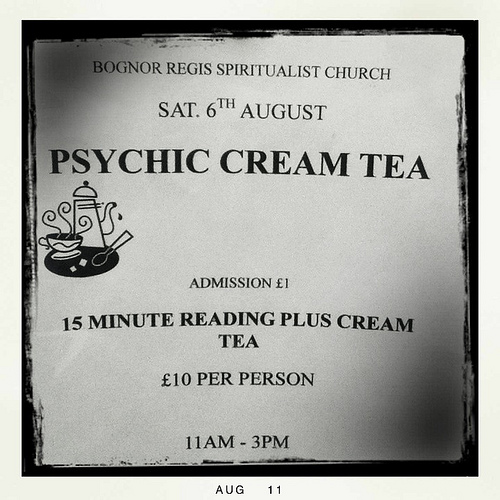

Wednesday, August the 31th, 2011
back to: title, date or indexes
There are cream teas, and then there are… psychic cream teas.

I have questions.
1. Is the cream tea a mere addendum to the psychic reading?
2. Or is the cream tea itself imbued with psychic woohoohoodiwoo?
3. Does one partake of the cream tea and become psychic?
4. If so, for how long do the effects last?
5. Why is that squiggly graphic shoved so far off-centre?
6. Was this psychic cream tea available at the same countryside fair as Robert Fripp's legendary “Toyah” cake sale?
Many thanks to Outa_Spaceman for providing me with this important snap.